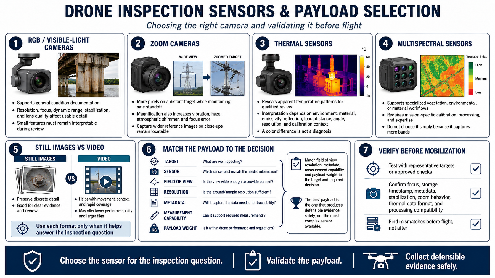

Sensors and Payload Selection
Connecting to LMS... Progress: in progress

Narration
Visible-light, or R G B, cameras support general condition documentation. Resolution, focus, dynamic range, stabilization, and lens quality affect whether small features remain useful after review.
Zoom cameras can place more pixels on a target while maintaining standoff, but magnification also amplifies vibration, haze, atmospheric movement, focus error, and narrow framing. Capture wider reference images so close-ups remain locatable.
Thermal sensors can reveal apparent temperature patterns for qualified review. Environment, material, emissivity, reflection, load, distance, angle, resolution, and calibration context affect interpretation. A color difference is not a diagnosis.
Multispectral sensors can support specialized vegetation, environmental, or material workflows at a high level. They require mission-specific calibration, processing, and expertise and should not be selected simply because they collect more bands.
Still images preserve discrete detail. Video supports movement, continuous context, and rapid coverage but may provide less per-frame quality and larger files. Use each format only when it helps the inspection question.
Match sensor field of view, resolution, metadata, measurement capability, and payload weight to the target and required decision. The best payload is the one that produces defensible evidence safely, not the most complex sensor available.
Verify the payload before mobilization with representative targets or approved checks. Confirm focus, storage, timestamp, metadata, stabilization, zoom behavior, thermal data format, and processing compatibility rather than discovering a mismatch after flight.